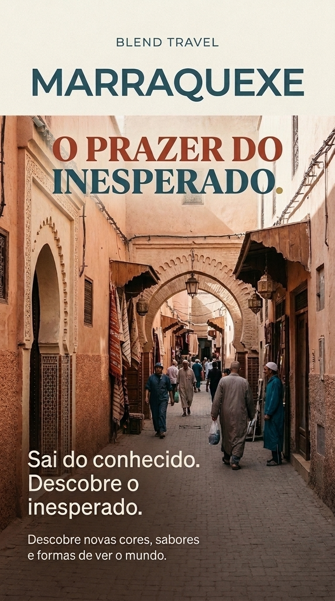
Uma viagem para sentir
O prazer do inesperado.
Sai da rotina e aproxima-te de Marraquexe através das suas cores, sabores, texturas, histórias e formas diferentes de viver o quotidiano.
01
Descoberta
02
Encontro
03
Experiência
A ideia central
Viajar também é aprender a olhar.
Marraquexe apresenta uma realidade cultural diferente, capaz de despertar curiosidade e, ao mesmo tempo, alguma hesitação.
A campanha transforma essa hesitação numa oportunidade de descoberta, convidando os jovens a observar, sentir e conhecer o destino com respeito pela sua identidade local.
Preparar a viagem
Tudo o que precisas para acompanhar a tua visita.
Aqui estão alguns dos nossos produtos que podes adquirir para acompanhar a tua visita a Marraquexe.
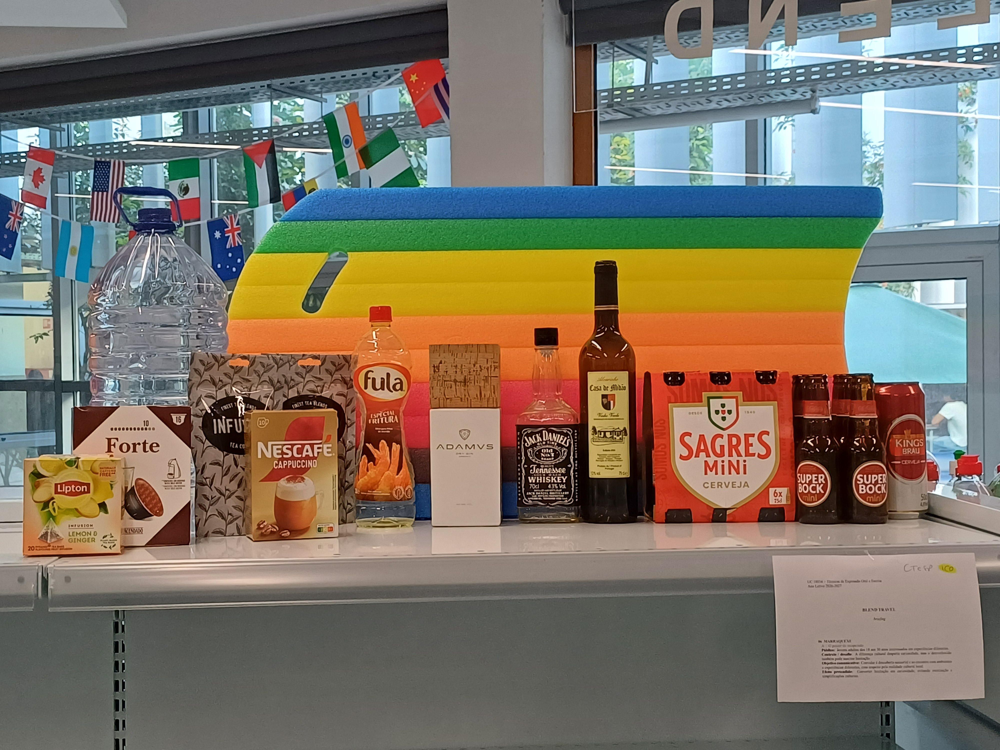
Prancha de surf
A poucos quilómetros de Marraquexe, mais perto da costa, podes surfar no mar de Marrocos.
Água
Leva contigo muita água para te manteres hidratado, pois podes enfrentar temperaturas elevadas.
Chá de menta
Experimenta este sabor tradicional do chá de Marraquexe.
Café
Importante para manteres a energia enquanto visitas todos os cantos de Marraquexe.
Óleo de argão
Um produto muito utilizado em Marrocos, associado à gastronomia e às tradições locais.
Vinho e whisky
Descobre novos sabores durante a viagem, sempre com moderação e responsabilidade.
Cerveja
Uma opção para levar contigo e aproveitar diferentes momentos da viagem, sempre com moderação.
Uma cidade para sentir
Descobre mais do que um destino.
Marraquexe convida-te a sair do conhecido e a encontrar novas referências através de experiências sensoriais, culturais e humanas.
Texturas que ficam na memória.
Paredes, tecidos, cerâmicas, portas e detalhes artesanais criam uma paisagem visual única.
Uma viagem para todos os sentidos.
Aromas, ingredientes e especiarias contam histórias através da gastronomia marroquina.
O inesperado acontece no caminho.
Caminhar, observar e conhecer outras formas de viver pode transformar a maneira como vemos o mundo.
BLEND TRAVEL
Sai do conhecido. Descobre o inesperado.
Uma campanha pensada para despertar a vontade de descobrir Marraquexe sem recorrer a estereótipos, exotização ou simplificações culturais.
O teu próximo destino pode começar aqui.
Explora o portfólio para conhecer o briefing, o conceito criativo, a identidade visual e os conteúdos da campanha.
Apresentação do projeto
Marraquexe: o prazer do inesperado.
Uma campanha de comunicação criada para transformar a hesitação perante o desconhecido em curiosidade, respeito e vontade de descoberta.
Conhecer Marraquexe é aceitar o convite para descobrir.
Marraquexe, conhecida como a “Cidade Vermelha”, é uma das cidades imperiais mais fascinantes de Marrocos. Localizada no norte de África, no sopé das impressionantes Montanhas do Atlas, a cidade representa um choque cultural a poucas horas de voo de Portugal.
Cartaz principal
A peça central da campanha apresenta Marraquexe como um destino de descoberta, curiosidade e novas experiências.
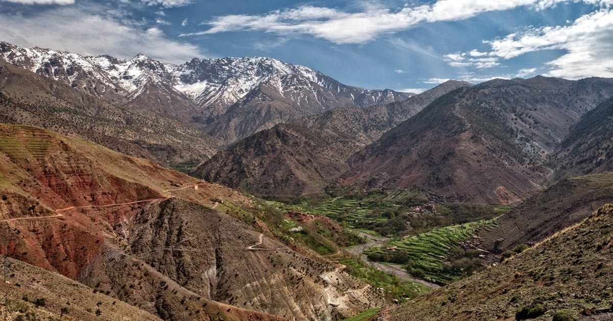
Montanhas do Atlas
Paisagens completamente diferentes da cidade, que mostram a diversidade natural de Marrocos.
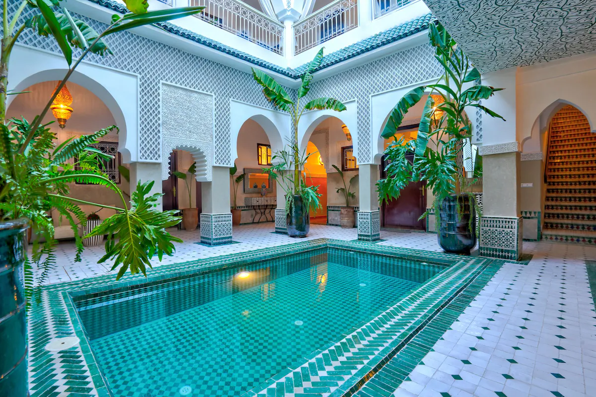
Riads tradicionais
Casas tradicionais com pátios interiores, azulejos, fontes e espaços tranquilos escondidos no interior da Medina.
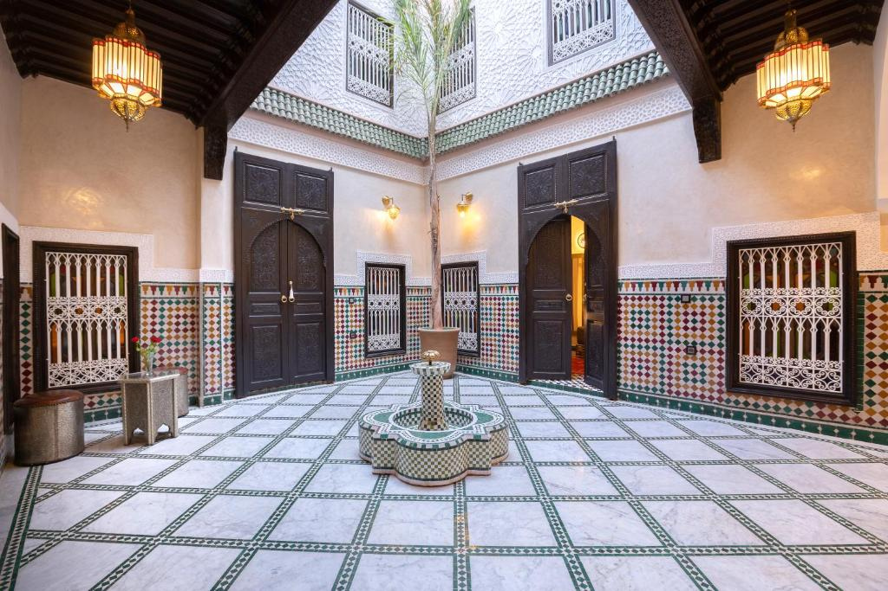
Arquitetura e detalhes
A arquitetura marroquina revela padrões geométricos, portas trabalhadas, mosaicos e uma forte atenção aos detalhes.
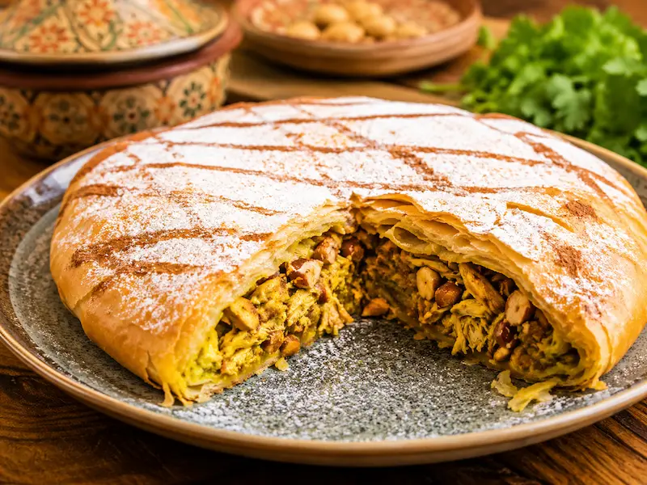
Pastilla
Uma especialidade de massa folhada que combina sabores doces e salgados numa receita tradicional.
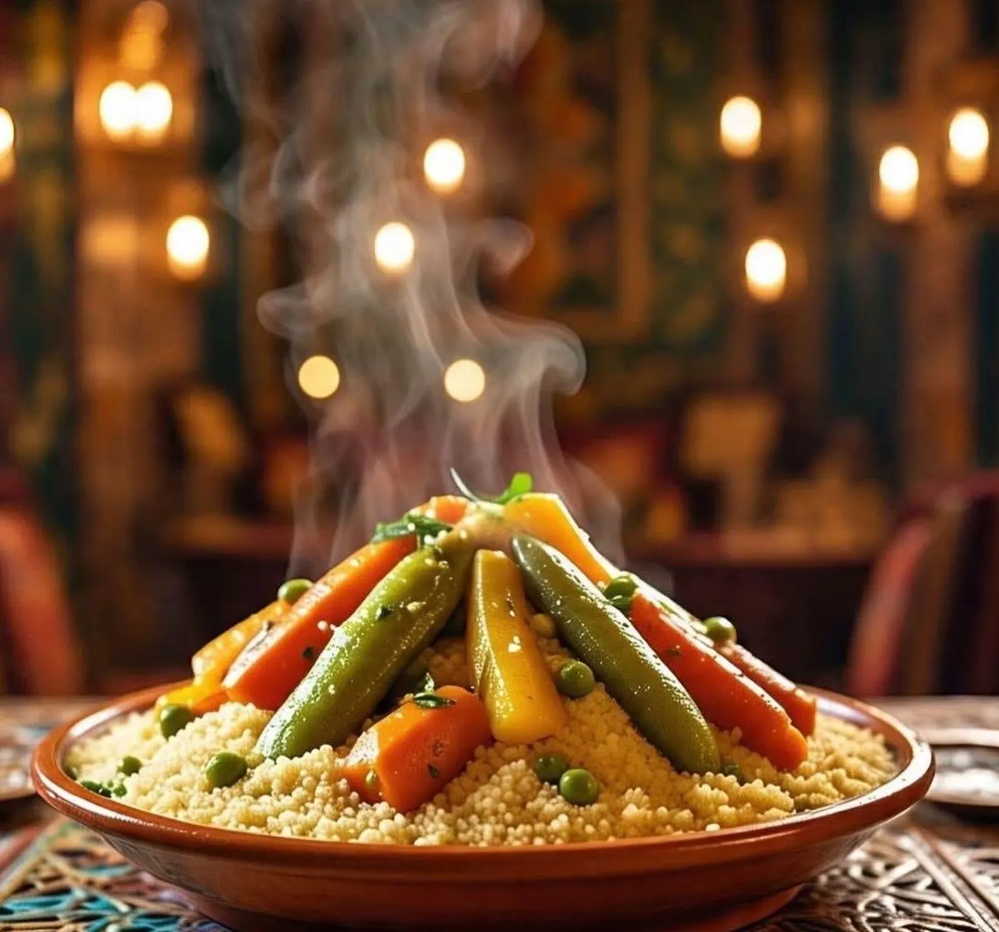
Cuscuz marroquino
Um prato tradicional servido com legumes, carne, grão-de-bico e diferentes temperos.
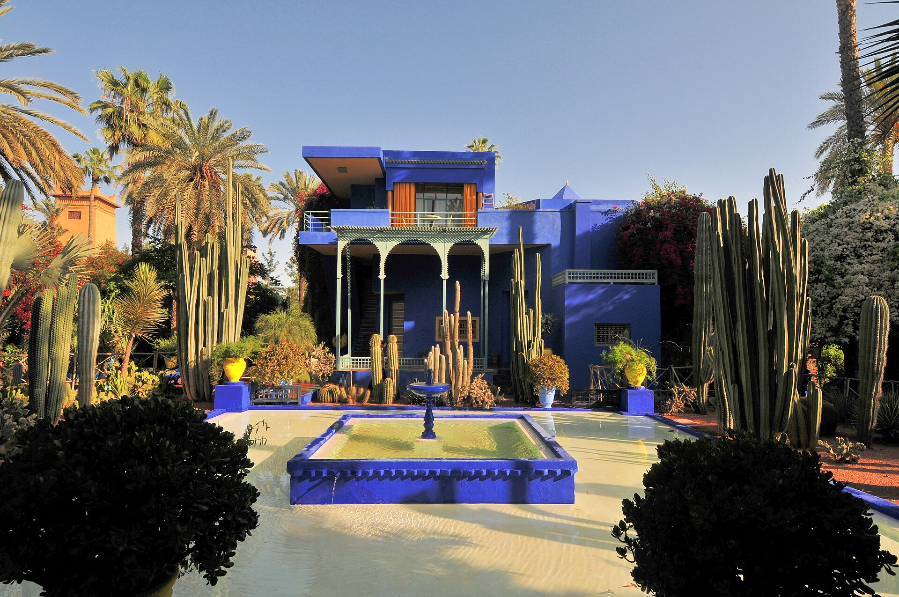
Jardim Majorelle
Um espaço conhecido pelo contraste entre a vegetação, a arquitetura e o característico azul dos edifícios.
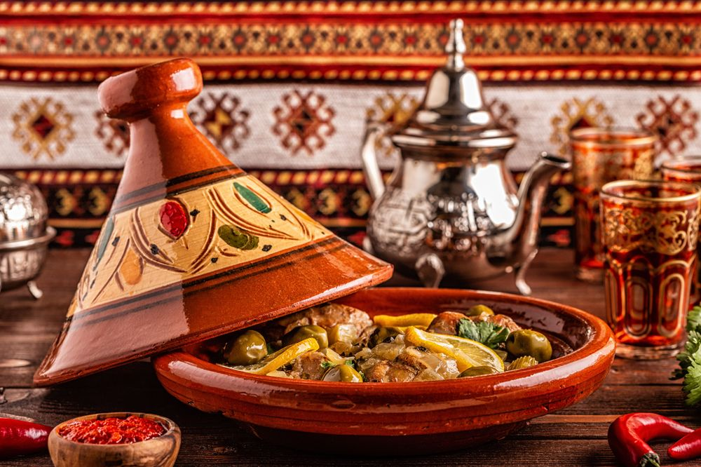
Tagine
Um dos pratos mais conhecidos de Marrocos, preparado com carne, legumes, azeitonas e especiarias.
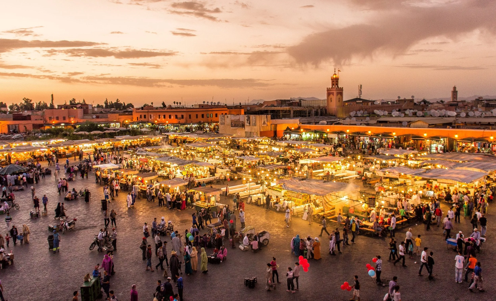
Os souks
Mercados tradicionais cheios de cores, aromas, tecidos, artesanato e especiarias.
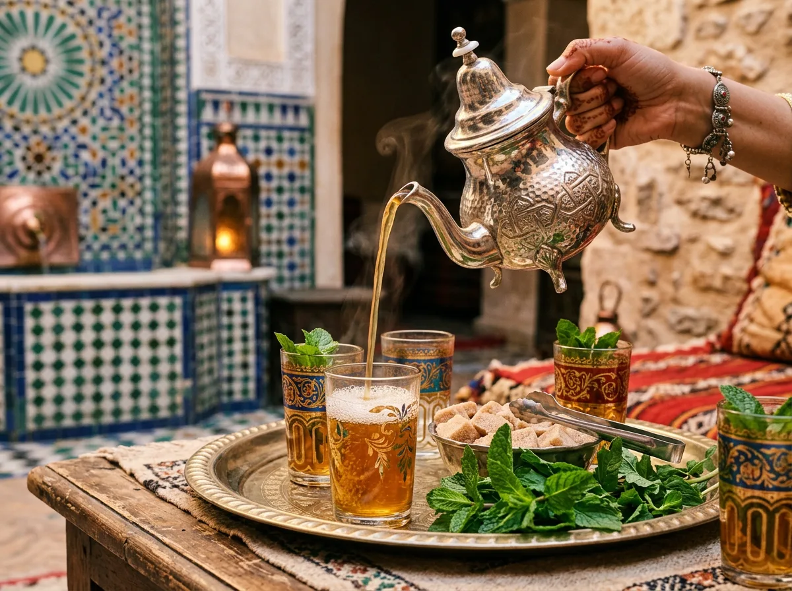
Chá de menta
Uma das bebidas mais tradicionais de Marrocos e uma experiência de hospitalidade e partilha.
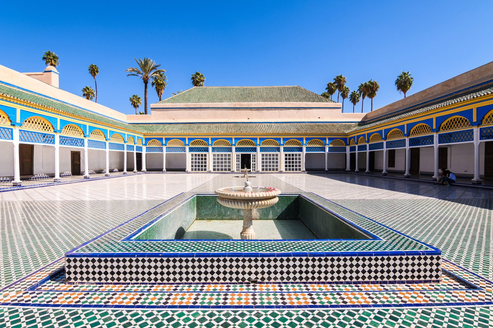
Praça jemaa el-fna
É o lugar mais emblematico de Marraquexe sobretudo ao final do dia ganha muita vida com comida, música, comércio e diferentes manifestações culturais.
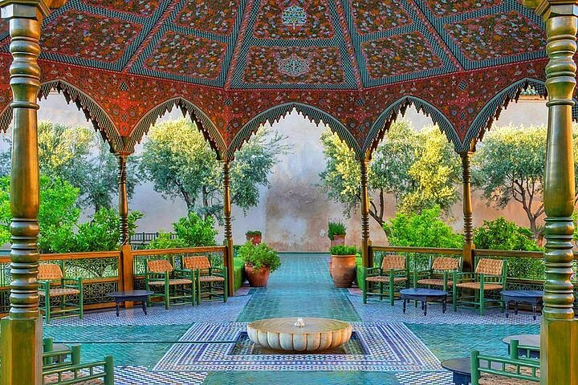
Palacio da bahia
O Palácio da Bahia, localizado na Medina de Marraquexe, é um deslumbrante complexo do final do século XIX famoso pelo seu imponente Grande Pátio em mármore, tetos esculpidos em madeira de cedro e pátios labirínticos.
Vantagens
Cultura diferente
Uma realidade cultural diferente da europeia, proporcionando uma experiência completamente nova.
Gastronomia rica
Uma cozinha cheia de sabores e especiarias, ideal para quem gosta de experimentar comida diferente.
Lugares fotogénicos
O Jardim Majorelle, os souks e os palácios oferecem cenários marcantes e diversificados.
Clima solarengo
Marraquexe tem sol durante grande parte do ano e invernos muito amenos durante o dia.
Acomodação única
É possível ficar num Riad, uma casa tradicional com pátio interior, muitas vezes escondida atrás de fachadas discretas.
Vários orçamentos
Existem opções desde hostels e comida de rua acessível até resorts de luxo.
A gastronomia marroquina
A gastronomia marroquina é rica em sabores e especiarias, embora nem sempre seja picante. A comida constitui também uma experiência cultural e uma forma de conhecer melhor o destino.
Tagine
Um dos pratos mais conhecidos da gastronomia marroquina, preparado em diferentes versões com carne, legumes e especiarias.
Cuscuz marroquino
Normalmente servido com legumes, carne e diferentes temperos.
Pastilla
Uma tarte folhada que combina sabores doces e salgados.
Saladas marroquinas
Podem incluir tomate, cenoura, beringela, pimentos e diferentes temperos.
Chá de menta
Uma das bebidas mais tradicionais e uma experiência cultural por si só.
Marraquexe é uma cidade para descobrir com todos os sentidos.
Em conclusão, Marraquexe oferece uma experiência única, combinando cultura, história, gastronomia e paisagens diferentes. A sua comida tradicional, os mercados, os monumentos históricos e os jardins tornam a cidade especialmente interessante para visitar.
Enquadramento da campanha
Público-alvo
Jovens adultos entre os 18 e os 30 anos interessados em viagens, experiências diferentes e descoberta cultural.
Desafio
A diferença cultural pode despertar curiosidade, mas também alguma hesitação perante o desconhecido.
Objetivo comunicativo
Incentivar a descoberta sensorial e o contacto respeitoso com ambientes, experiências e formas de viver diferentes.
Efeito pretendido
Transformar a hesitação em curiosidade, evitando estereótipos, exotização e simplificações culturais.